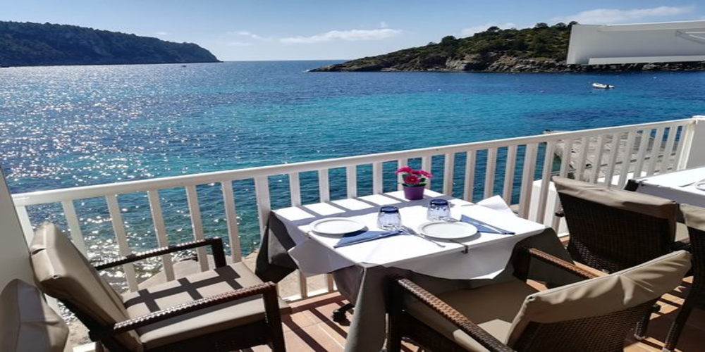
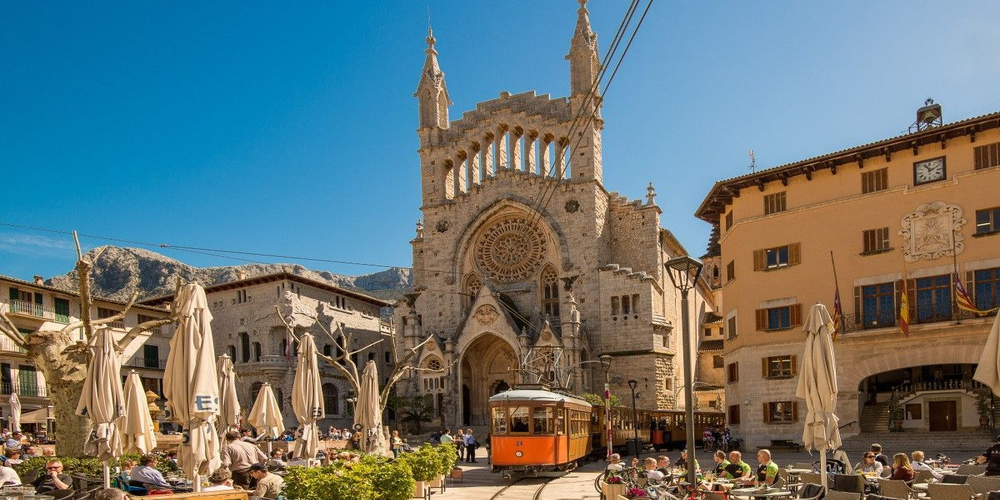
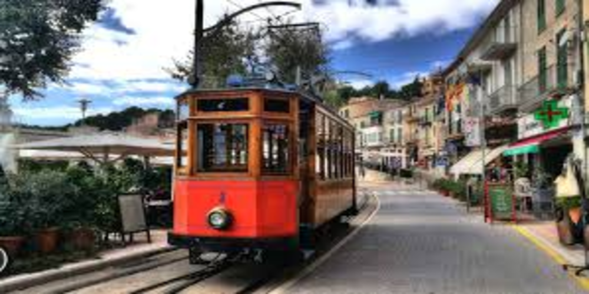

Majorque
Espagne
Informations pratiques
Fêtes et événements
Chaque année, de nombreuses fêtes ont lieu à Palma de Majorque. En voici les principales :
- 1er janvier : Jour de l'An (national)
- 5 janvier : Défilé des Rois Mages - (Cavalcada dels Reis Mags) (national)
- 6 janvier : L'Épiphanie - (Día dels Reis) (national)
- Une semaine avant Pâques : Semaine Sainte (national)
- 1er mai : Fête du Travail (national)
- 24 juin : Fête de la Saint-Jean (local)
- 2 août : Fête de Pollença (local)
- 12 septembre : Jour de Majorque - (Diada de Majorque) (local)
- 12 octobre : Jour de l'Hispanité - (Día de la Hispanidad) (national)
- 25 décembre : Noël (national)
Infos touristiques
Une fois à Palma de Majorque, n'hésitez pas à vous rapprocher des professionnels du tourisme pour vous informer et organiser votre séjour.
Office de tourisme de Palma de Majorque (Informació Turística de Mallorca)
Informations pratiques et conseils utiles (hébergement, restauration, transports, fêtes, manifestations culturelles, etc.)
- Adresse : Plaça de la Reina, 2 - 07015 Palma
- Téléphone : +34 971 17 39 90
- Site internet : www.infomallorca.net/
Santé
Consultez votre médecin avant de partir et souscrivez à une assurance couvrant les frais médicaux et le rapatriement sanitaire. Palma compte plusieurs hôpitaux et cliniques, ainsi que de nombreux médecins et spécialistes de santé.
Vaccination
Aucun vaccin n'est obligatoire pour entrer sur le territoire espagnol.
Pour plus d'informations, contactez votre centre de vaccinations internationales Air France :
- Adresse : 38, quai de Jemmapes, 75010 Paris
- Site internet : www.vaccinations-airfrance.fr
- Téléphone : +33 (0)1 43 17 22 00
- Prendre rendez-vous pour une vaccination :
- par Internet ( Cliquer ici )
- au +33 (0)1 43 17 22 00
Formalités administratives
Conditions pour entrer sur le territoire de l'Espagne
Si vous êtes de nationalité française, il Il n'est pas nécessaire de demander un visa pour les séjours de moins de 3 mois sur le territoire espagnol. Votre carte d'identité ou votre passeport doit cependant être en cours de validité.
Pour voyager sereinement à Palma de Majorque, suivez les conseils aux voyageurs du ministère français des Affaires étrangères : www.diplomatie.gouv.fr
Se déplacer à Palma de Majorque
Palma est la seule ville de l'île disposant d'un système performant de transports en commun, principalement des bus. Bien que la majeure partie de l'île soit desservie par ces bus et par deux lignes de trains, avoir son propre véhicule permet de jouir d'une plus grande liberté, d'autant qu'il est facile de louer une voiture sur place. Par ailleurs, vous trouvez sans problème des taxis à Palma. Enfin, il est facile et agréable de se déplacer à vélo, même si le nombre de pistes cyclables est encore limité (la principale longe le littoral).
Les incontournables
Palma de Majorque
Palma de Majorque est la capitale des Baléares. La ville se situe dans une baie bétonnée d’hôtels et de clubs sur plus de 30 km ! Derrière les murs, se trouve une jolie vieille ville : la Casco Antigo ou vieux quartier de Palma avec son dédale de ruelles… On oublie totalement les boîtes de nuits et clubs branchés qui font sa réputation ! La cathédrale de Palma de Majorque, superbement installée face à la mer, est magnifique tout comme le palais de l’Almudaina, tout près.
Fornalutx
Situé à quelques kilomètres de Sóller, Fornalutx est un petit village médiéval rempli de charme. Il est considéré comme l’un des plus jolis de l’île. Par conséquent, l’été, le village de Fornalutx est assailli de touristes.
Les plages de Cala Ratjada
Au milieu de la débauche de constructions qui défigurent une large partie littoral oriental, de superbes baies et criques rappellent pourquoi l'on part depuis si longtemps à Majorque en quête de plages paradisiaques. Dans les environs de Cala Ratjada se trouvent quelques plages parmi les plus agréables de Majorque, en particulier la Cala Mesquida, la Cala Mitjana et la Cala Matzoc : à vous le sable blanc et les eaux turqoise, sur fond de pinèdes et de dunes.
Platja des Coll Baix
Les criques isolées font partie des sites les plus charmants de Majorque. Il en est peu de comparables à la Platja des Coll Baix. Acessible uniquement à pied, en traversant des bois embaumant le pin, ou par la mer, cette plage bien cachée Cap des Pinar, couvert de pinèdes, se niche au pied de falaises. Des eaux d'un bleu variant entre le cbalt et le turquoise roulent le long de ce sublime croissant de sable blanc. Et, si vous choisissez bien votre moment, seuls le bruit des vagues et le chant des oiseaux viennent troubler le silence...
Platja des Trenc
La plus grande plage sauvage de Majorque s'étuire sur 2 km au nord-ouest de Colonia de Sant Jordi. Les longues étendues de sable blanc, les eaux azur et le cadre idyllique de pinèdes et de dunes donnent une idée de la beauté de la côte majorquine avant qu'elle ne souffre de la surexploitation touristique. Officiellement, c’est une plage nudiste, mais elle plaît également aux “textiles”, qui profitent dezs chaises longues en location.
Alcúdia
Alcúdia, sur l’île de Majorque, est une petite ville chargée d'histoire, bien mignonne avec ses murailles de pierre dorée et ses ruelles où il fait bon flâner, étape obligée pour les excursions dans la péninsule du cap des Pinar. Elle s'articule autour de deux pôles assez éloignés l'un de l'autre : le centre historique et le port, d'où partent les bateaux pour Ciutadella (Minorque).
Majorque en 7 jours
Je vous propose un itinéraire qui permet de découvrir en une semaine Palma, la capitale des Baléares, et les paysages spectaculaires et contrastés de la Serra de Tramuntana. L’île de Majorque n’attend plus que vous !
Jour 1 : Palma
Perdez-vous dans la vieille ville jusqu’à atteindre la majestueuse cathédrale. Déjeunez en terrasse à ses abords puis visitez le palais royal de l’Almudaina ou le Palau March et sa collection d’œuvres d’art. Traversez le quartier d’Es Père, jusqu’à atteindre le musée d’Art contemporain Es Baluard. Après la visite, sa terrasse, plantée sur les remparts, s’apprécie au soleil couchant, un cocktail à la main. Dînez dans le quartier de Santa Catalina, particulièrement animé en soirée.
Jour 2 : de Palma à Sant Elm
Premier arrêt en bordure de la ville : le Castell de Bellver, une étonnante forteresse ronde. Vous attend ensuite la Fundació Miró, où se visitent les ateliers de l’artiste. Déjeunez face à la plage de Portals Nous, surnommée la « Nice miniature », puis faites un détour par le Museu Liedtke : la vue sur les falaises y est superbe. De là, allez voir les bateaux rentrer de la pêche à Port d’Andratx et passez la soirée et la nuit à Sant Elm, à l’ambiance un peu bohème.
Jour 3 : Sant Elm et l’île de Sa Dragonera
Découvrez la côte à bord d’un kayak ou sur un paddle board, puis déjeunez sur le port de Sant Elm. De là, poursuivez votre itinéraire en prenant le ferry vers Sa Dragonera. Plusieurs itinéraires permettent de découvrir les falaises et les phares de l’île. Nuit à Sant Elm.
Jour 4 : Estellencs, Banyalbufar et Valldemossa
Montez à la Torre des Verger, près d’Estellencs, pour une vue vertigineuse sur la côte. Filez ensuite admirer les vignobles de Banyalbufar, puis tombez sous le charme de Valldemossa, où Chopin et Sand avaient trouvé refuge. Nuit sur place.
Jour 5 : Son Marroig, Deià et Cala Deià
Le matin, visitez les propriétés de l’archiduc Louis-Salvador : le monastère de Miramar et Son Marroig. Rejoignez ensuite Deià et ses ruelles joliment fleuries. Vous pourrez vous baigner dans les eaux cristallines de sa cala et dîner sur place. Nuit à Deià.
Jour 6 : Sóller et Port de Sóller
Une adorable place bordée de façades modernistes, un musée Art nouveau, une balade à travers les vergers d’orangers, un tram vintage menant à la plage : une journée à Sóller passe vite ! Nuit sur place.
 Jour 7 : Sa Calobra
Empruntez la route mythique de Sa Calobra à la fraîche, afin d’éviter les embouteillages. Faites un crochet par Cala Tuent pour déjeuner, puis filez vers Palma.